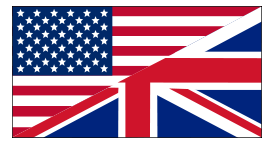

Olivier LE DIOURIS - Voile & Navigation

-
Huit mois, en double autour du Pacifique
sur un ketch de 42'.
San Francisco CA, Nuku-Hiva (Îles Marquises), Ua Pou (Îles Marquises), Rangiroa (Tuamotu), Tahiti (Îles
de la Société),
Moorea (Îles de la Société), Huahine (Îles de la Société), Taha'a (Îles de la Société), Raiatea (Îles de la Société),
Bora-Bora (Îles de la Société), Tongareva (Îles Cook), Kiritimati (Kiribati Republic), O'Ahu (Hawai'i Islands),
San Francisco CA.
Logiciels utilisés à bord durant le voyage:
- OpenCPN
- Logiciels developpés pour l'occasion (at home!), pour la météo, le routage, logging, etc.
- Pacific Cup (San Francisco - Hawai'i), navigateur à bord de Relentless (Sydney 32)
- Régate à bord de Kookaburra, J105 dans la Baie de San Francisco.
Navigateur professionnel en course au large
-
Année 1983
- "Trophée des Multicoques" à bord de Paul Ricard, foiler de 60' (Skipper Éric
Tabarly).
-
Année 1984
- "Trophée des Multicoques" à bord de Paul Ricard (Skipper Éric
Tabarly).
- Observer Singlehanded Transatlantic Race (OSTAR) à bord de "Numéro
Cinq"
-
Québec - Saint-Malo, navigateur à bord de Paul Ricard. (Vainqueur en Classe 2 !)
Pendant cette course, nous avons été le premier voilier à franchir le mur des 500 miles par jour,
en parcourant 508 miles en 24 heures.
Formule Tag (un Classe 1, skipper Mike Birch) a brisé notre record 2 jours plus tard - avec 512 miles en 24
heures.
On a donc profité de ce record pendant deux jours mémorables.
- Semaine de vitesse de La Baule
- Semaine de vitesse de Brest
- Ruta del Discubrimento (Malaga - Santo-Domingo), navigateur à bord de Paul Ricard.
-
Year 1985
- Semaine de La Rochelle
- "Trophée des Multicoques" à bord de Roger &
Gallet, 80' catamaran (Skipper Éric Loizeau). Vainqueur toutes classes !
- Semaine de vitesse de La Baule
- Race around Europe, navigateur à bord de Roger & Gallet
- Kiel (Allemagne)
- Scheveningen (Hollande)
- Torquay (UK)
- Lorient (France)
- Lisbon (Portugal)
- Malaga (Espagne)
- Toulon (France)
- Porto-Cervo (Italie)
- Semaine de vitesse de Brest
-
Year 1986
- "Trophée des Multicoques" à bord de Royale, 85' catamaran (Skipper Loïc
Caradec). Vainqueur toutes classes !
-
Navigateur et Skipper à bord de Milène V, IOR Maxi, 70'.
- Giraglia
- Semana de Palma de Majorca
- Nioulargue (Saint Tropez)
- RORC Races (Fort Lauderdale - Florida)
-
Year 1987
- Semaine de La Rochelle
- "Trophée des Multicoques" à bord de Côte d'Or
2, 80' foiler (Skipper Éric Tabarly). Vainqueur toutes classes !
- Semaine de vitesse de La Baule
- Race around Europe, navigateur à bord de Côte d'Or 2
- Scheveningen (Hollande)
- Bremerhaven (Allemagne)
- Edimburg (Écosse)
- Dublin (Irlande)
- Lorient (France)
- Villamora (Portugal)
- Barcelona (Espagne)
- Toulon (France)
- San-Remo (Italie)
- Semaine de vitesse de Brest
- Entre 1980 et 1984
- Dessin et construction de "Numéro Cinq", trimaran de 30' pour l'OSTAR
(Observer Singlehanded Transatlantic Race).
- De mai 1982 à mars 1984
-
En charge au "Centre de Formation à la Croisière" de la flotte de bateaux de location (30 voiliers).
- Printemps 1981
- Convoyages de Bretagne au sud de la France, par le détroit de Gibraltar.
- De mai 1979 à décembre 1980
-
Moniteur de voile professionnel au Cap d'Agde (Méditerranée, France).
Encadrant des stages vers la Méditerranée française, italienne et espagnole.
- Été 1978 et hiver 1978/1979
-
Moniteur de voile au "Groupe Finistérien de Croisière".
Encadrant des stages vers Jersey, Guernsey, Sark, le sud de la Cornouaille (England), et le sud de l'Irlande.
- Hiver 1977/1978
-
Moniteur de voile au "Groupe Finistérien de Croisière".
Encadrant des stages vers Jersey, Guernsey, Sark, le sud de la Cornouaille (England).
- Été 1977
- Moniteur de voile à Beg Meil (Bretagne sud, France). Dériveur, croisière, planche à voile.
- Été 1976
- Moniteur de voile à Beg Meil (Bretagne sud, France). Dériveur, croisière, planche à voile.
OlivSoft never stops